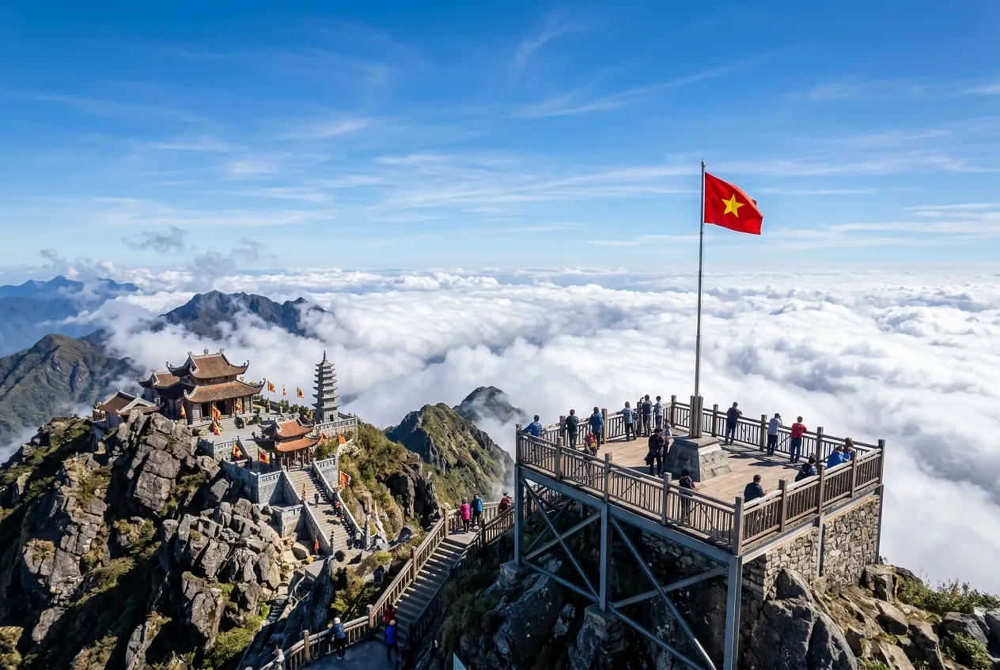
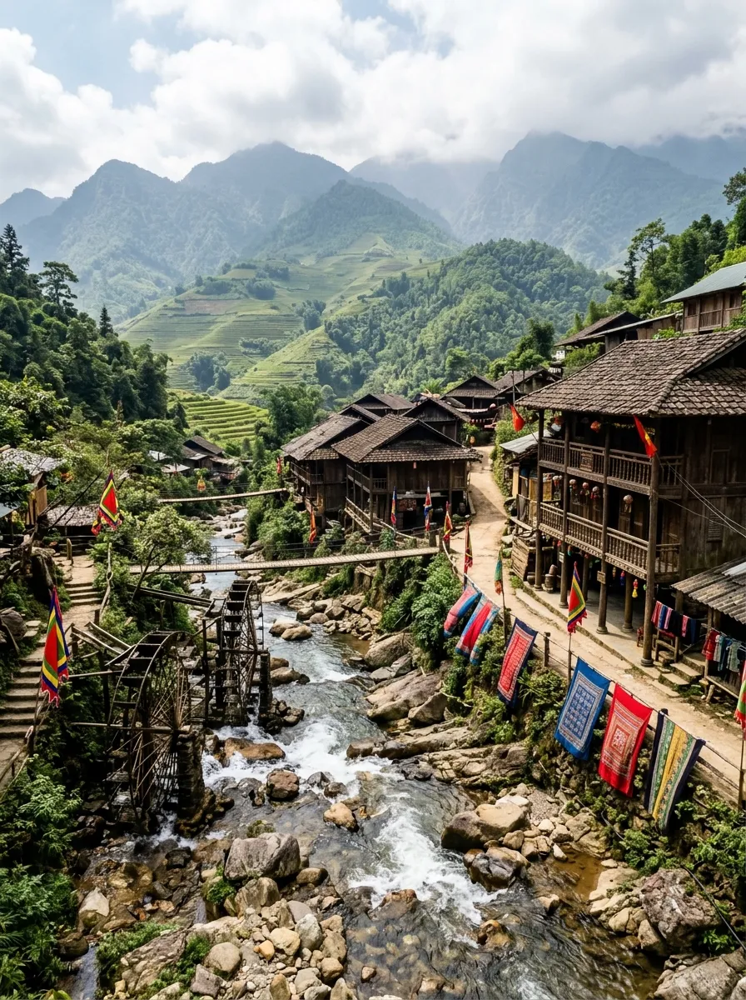
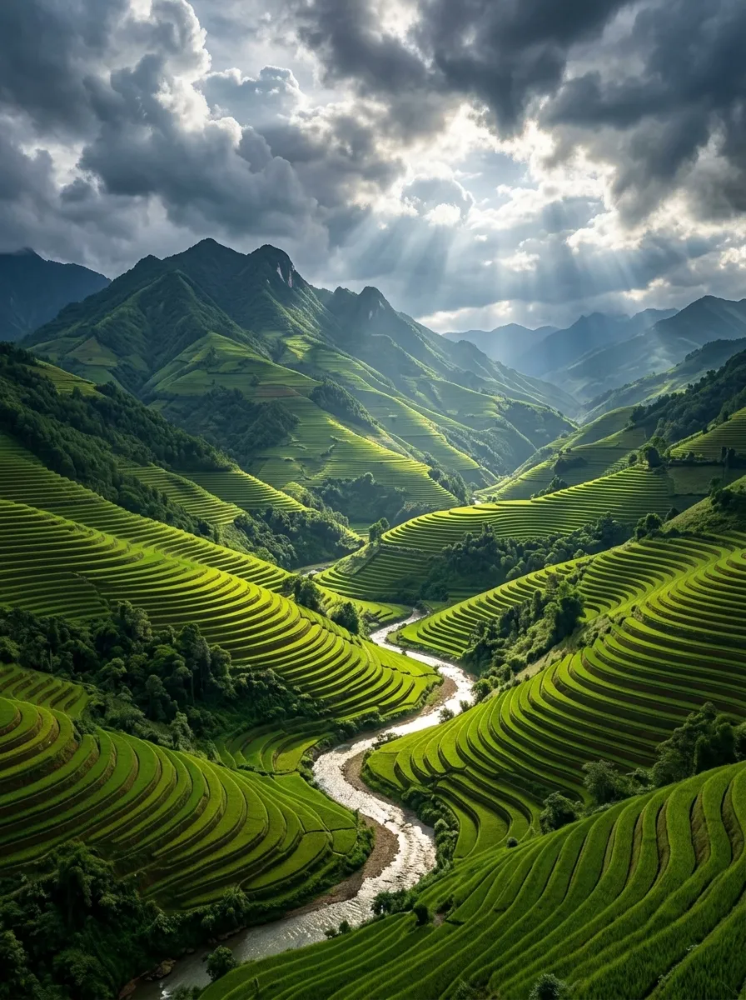
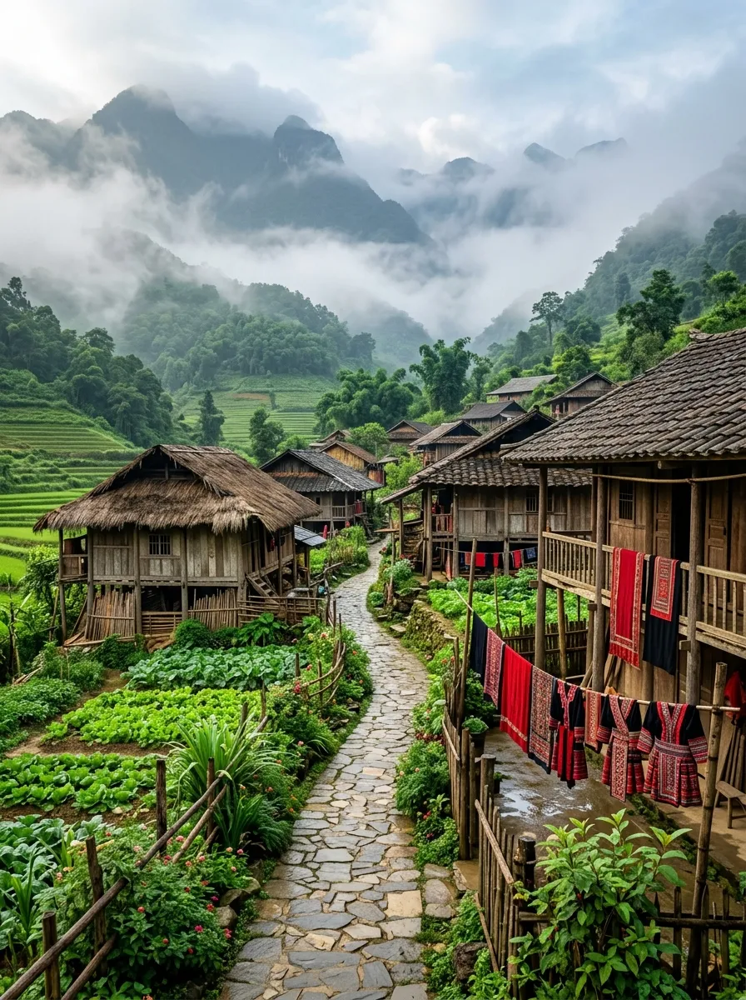
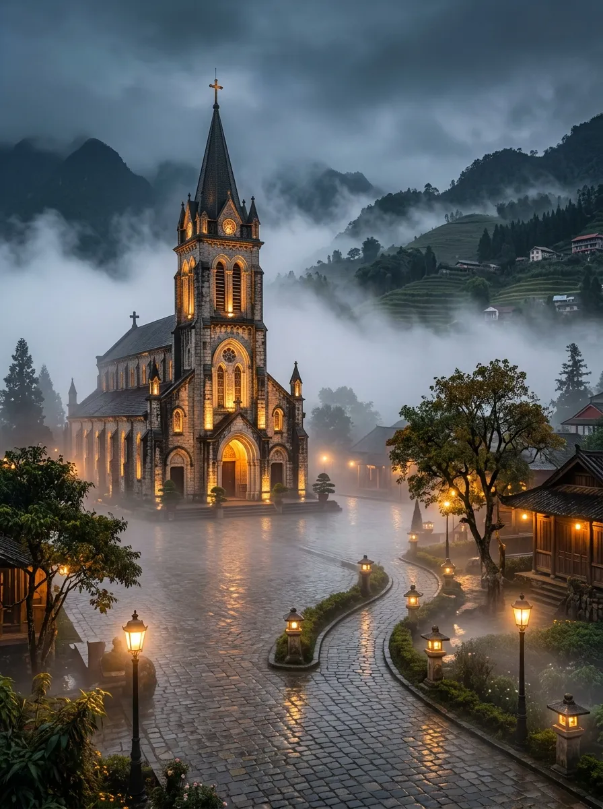
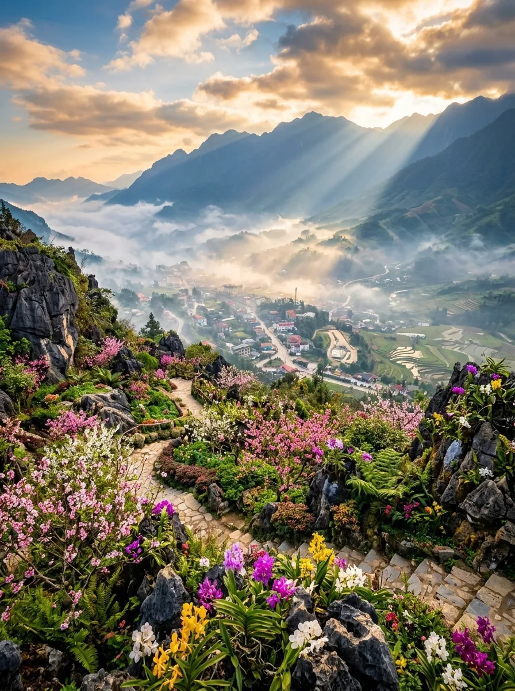
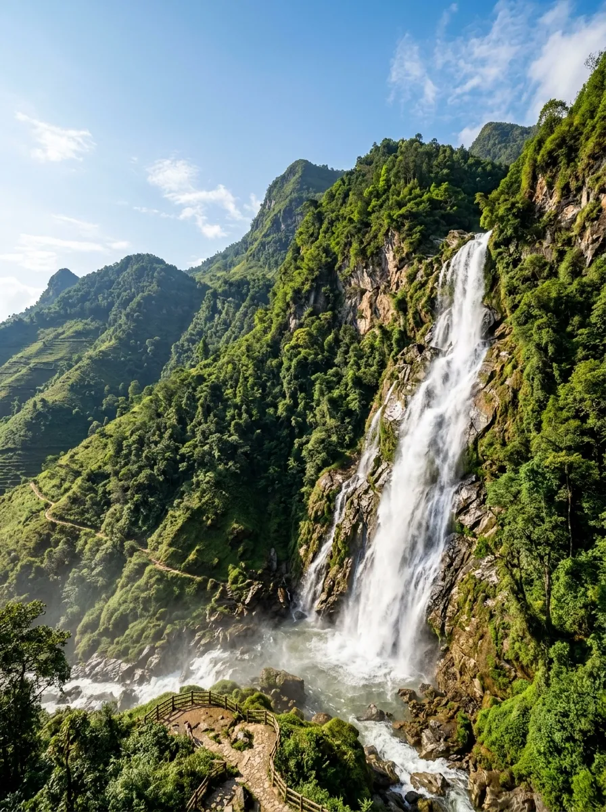

📋 Tổng quan
Nằm ở độ cao trung bình từ 1.500m – 1.800m so với mực nước biển, thị xã du lịch Sapa ẩn mình dưới chân dãy Hoàng Liên Sơn hùng vĩ. Khí hậu nơi đây mang sắc thái ôn đới và cận nhiệt đới mát mẻ quanh năm, nhiệt độ trung bình chỉ dao động từ 15 - 18°C. Sapa nổi tiếng với những thửa ruộng bậc thang đẹp như tranh vẽ uốn lượn quanh sườn núi, cùng đỉnh Fansipan - nóc nhà của Đông Dương quanh năm mây mù bao phủ.
Vùng đất Sapa cũng là nơi sinh sống lâu đời của nhiều đồng bào dân tộc thiểu số như H'Mông, Dao đỏ, Tày, Giáy, Xá Phó. Đến với Sapa, du khách không chỉ được hòa mình vào thiên nhiên núi rừng đại ngàn huyền ảo, mà còn có cơ hội tìm hiểu văn hóa bản địa mộc mạc và thưởng thức các món ăn vùng cao đặc sắc.
📸 Tọa độ Check-in Nổi bật
Khám phá các tọa độ ngắm cảnh và chụp hình đỉnh nhất tại Sapa. Bấm vào hình ảnh để xem phóng to chi tiết:

Đỉnh Fansipan
Chinh phục đỉnh núi cao nhất Việt Nam ở độ cao 3.147,3m bằng cáp treo ba dây hiện đại, ngắm biển mây cuồn cuộn trôi dưới chân.

Bản Cát Cát
Ngôi làng cổ kính mộc mạc của người H'Mông với cối xay nước bằng tre, nhà sàn gỗ cổ xưa và các sạp thổ cẩm rực rỡ sắc màu.

Thung lũng Mường Hoa
Mãn nhãn với những dải ruộng bậc thang tầng tầng lớp lớp uốn lượn xung quanh dòng suối Mường Hoa uốn mình mềm mại.
Đèo Ô Quy Hồ
Một trong "tứ đại đỉnh đèo" hiểm trở bậc nhất Việt Nam nối liền Lào Cai - Lai Châu, điểm ngắm hoàng hôn rực lửa kỳ vĩ nhất Tây Bắc.

Bản Tả Phìn
Nổi tiếng với văn hóa người Dao Đỏ thân thiện, bồn tắm lá thuốc cổ truyền tốt cho sức khỏe và phế tích tu viện đá cổ kính đổ nát.

Nhà thờ Đá Sapa
Biểu tượng kiến trúc gothic Pháp cổ kính nằm ngay trung tâm quảng trường thị xã, chìm trong làn sương trắng huyền ảo bồng bềnh.

Núi Hàm Rồng
Công viên sinh thái nằm ngay phía sau Nhà thờ Đá, có cổng trời ngắm toàn cảnh thị xã Sapa thơ mộng dưới chân mây mù.

Thác Bạc
Dòng thác đổ xối xả từ độ cao hơn 200m từ khe núi cao Hoàng Liên xuống chân đèo, nước tung bọt trắng xóa lấp lánh như bạc.
🚗 Di chuyển & Chi phí
Nằm cách Hà Nội khoảng 300km, giao thông kết nối Hà Nội - Lào Cai qua đường cao tốc vô cùng thuận lợi:
1. Lựa chọn phương tiện đến Sapa
- Xe khách cabin VIP ngủ đêm: Tuyến xe giường nằm cabin đơn/đôi chạy cao tốc thẳng lên thị xã Sapa chỉ mất khoảng 5 - 6 tiếng, êm ái và tiết kiệm.
- Tàu hỏa du lịch: Đi tàu đêm từ ga Hà Nội đến ga Lào Cai, sau đó bắt xe buýt hoặc taxi trung chuyển chạy thêm 30km đèo dốc lên Sapa.
- Tự lái xe ô tô riêng: Theo cao tốc Nội Bài - Lào Cai, sau đó qua cung đường đèo 4D lên thị xã (yêu cầu tay lái vững).
2. Chi phí cáp treo Fansipan (Khứ hồi)
Vé cáp treo được bán trực tiếp tại ga cáp treo Fansipan Legend hoặc các đại lý du lịch với mức giá niêm yết theo quy định của tập đoàn Sun Group.
| Dịch vụ tham quan | Chi phí tham khảo |
|---|---|
| Vé cáp treo Fansipan khứ hồi (Người lớn) | Giá theo quy định Sun World |
| Vé tàu hỏa leo núi Mường Hoa (Ga Sapa - Ga cáp treo) | Vé khứ hồi hành trình ngắn |
| Vé tàu hỏa leo núi đỉnh Fansipan (Ga cáp treo lên đỉnh) | Vé chiều lên (Chiều xuống có thể đi bộ 600 bậc đá) |
| Vé vào bản Cát Cát (Bảo tồn văn hóa H'Mông) | Vé niêm yết tại cổng bản |
🏨 Lưu trú & Ẩm thực Tây Bắc
1. Gợi ý lựa chọn nơi lưu trú
- Trung tâm thị xã (Quanh hồ Sapa & Nhà thờ đá): Thuận tiện ăn uống, dạo chợ đêm, đi cà phê và mua sắm đồ lưu niệm thổ cẩm.
- Khu vực các bản (Lao Chải, Tả Van): Nhiều resort nghỉ dưỡng sang trọng view thung lũng lúa hoặc homestay nhà sàn gỗ mộc mạc, yên tĩnh hòa mình với thiên nhiên ruộng đồng.
2. Ẩm thực vùng cao Sapa thơm ngon
🗓️ Thời điểm vàng & Cảnh báo an toàn
1. Mùa nào đi du lịch Sapa đẹp nhất?
- Tháng 3 – 5: Mùa xuân ấm áp, trăm hoa đua nở khắp các triền đồi (hoa đào rừng, hoa mận trắng muốt, đỗ quyên Fansipan rực rỡ).
- Tháng 9 – 10: Mùa lúa chín vàng óng ả trên những thửa ruộng bậc thang. Khí hậu thu dịu mát, khô ráo rất thích hợp săn mây.
- Tháng 12 – 1: Mùa đông lạnh giá nhiệt độ có thể xuống dưới 0°C, thường xuyên xuất hiện sương muối và băng tuyết trên đỉnh Fansipan.
2. Cảnh báo an toàn đèo dốc & mây mù
- Lái xe cẩn thận khi sương mù dày: Đèo dốc Sapa thường có sương mù bao phủ tầm nhìn dưới 5m vào chiều tối. Bật đèn sương mù và giữ tốc độ rất chậm.
- Chuẩn bị áo ấm cẩn thận: Dù đi vào mùa hè, nhiệt độ ban đêm ở Sapa vẫn se lạnh (khoảng 15-17°C). Hãy mang theo một chiếc áo khoác nhẹ đề phòng cảm lạnh.
⚠️ Cảnh báo bảo vệ thiên nhiên: Hãy mang theo rác về sau khi trekking các bản làng hoặc leo núi Fansipan. Không tự ý bẻ hoa đỗ quyên hay vứt rác xuống thung lũng Mường Hoa xinh đẹp.